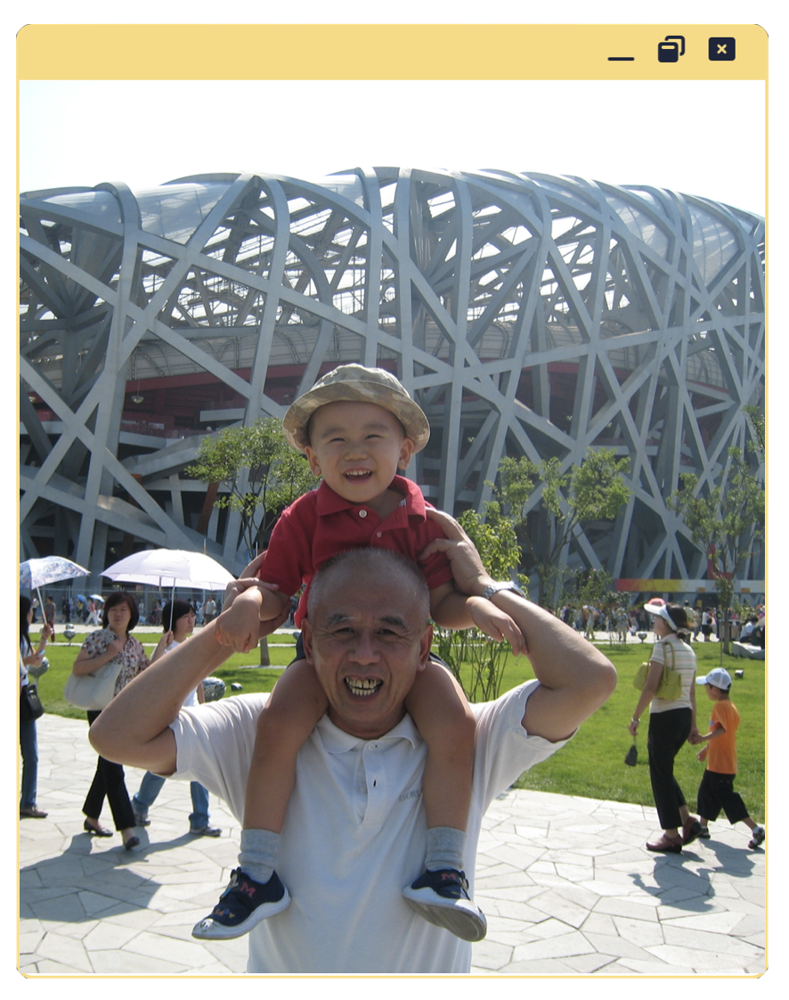
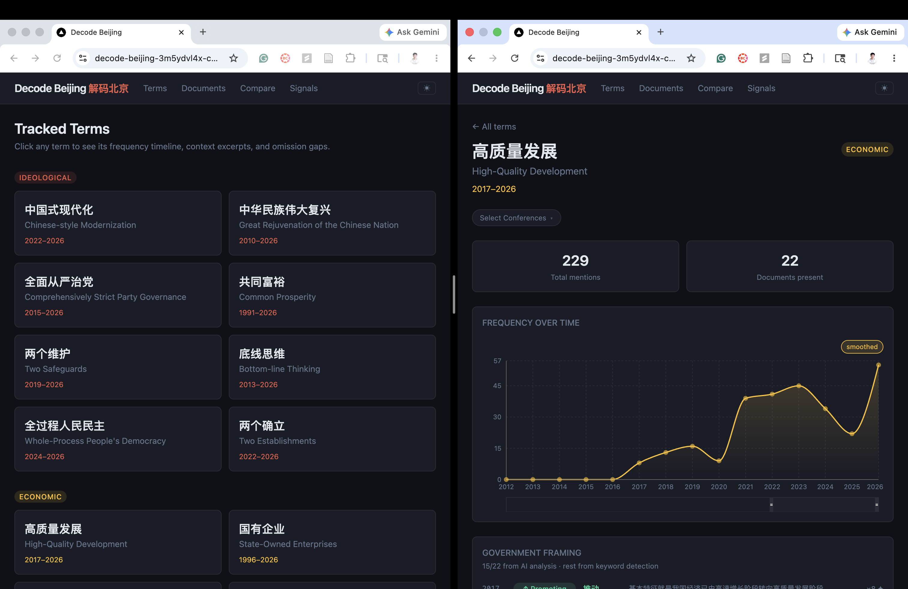
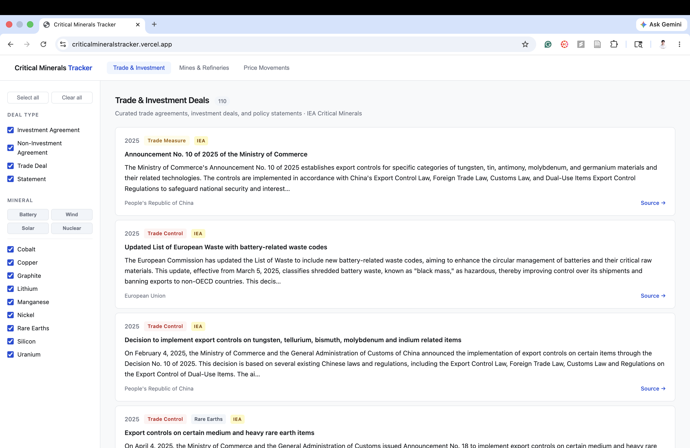
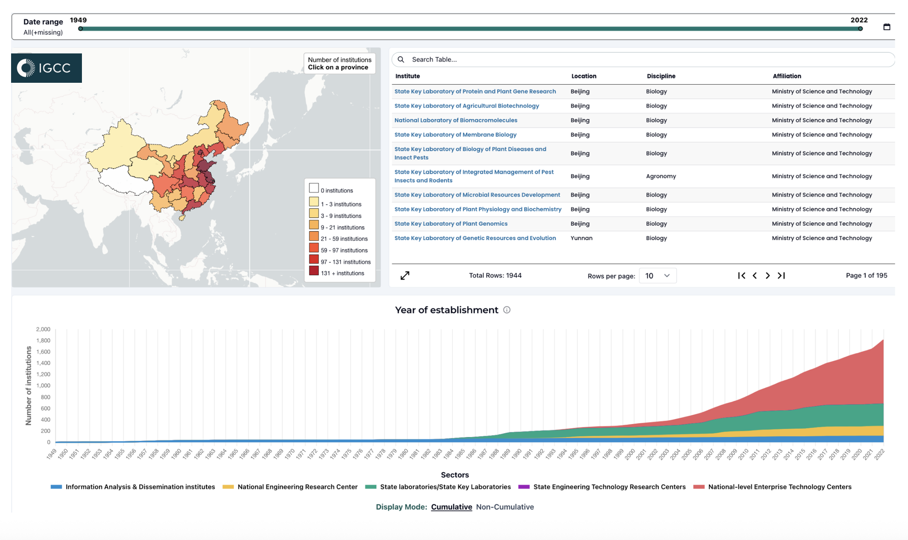
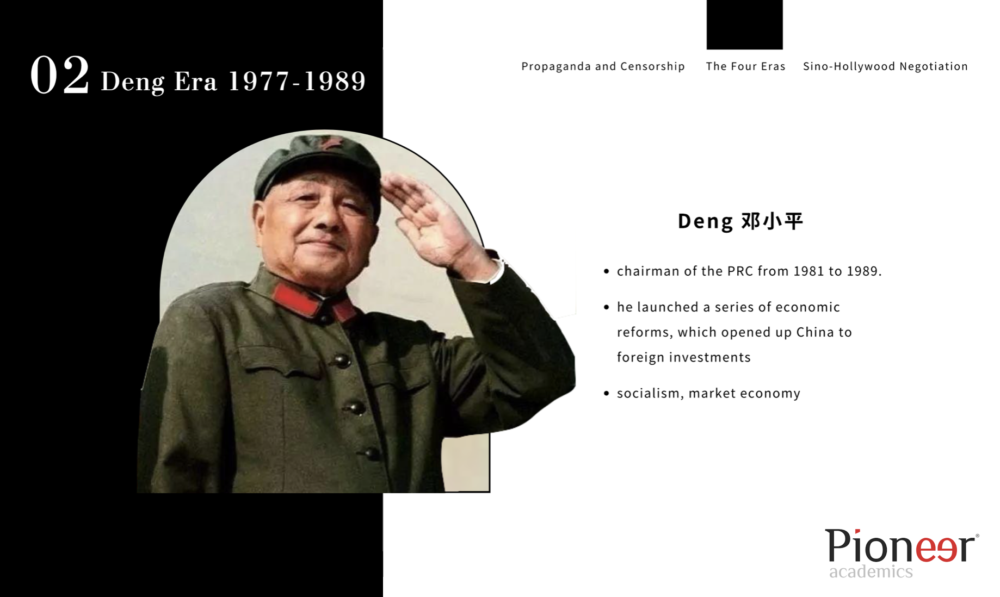
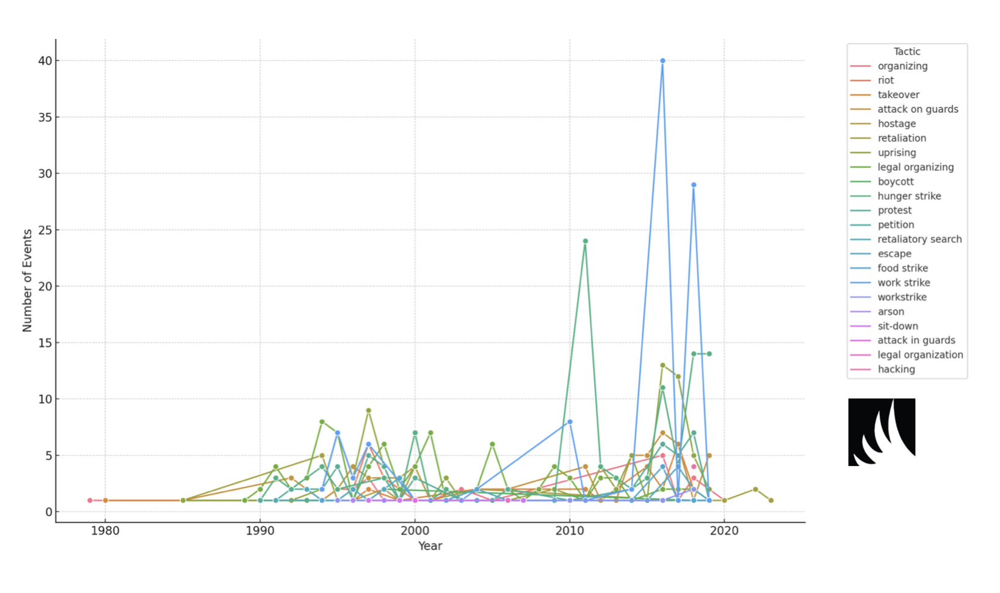
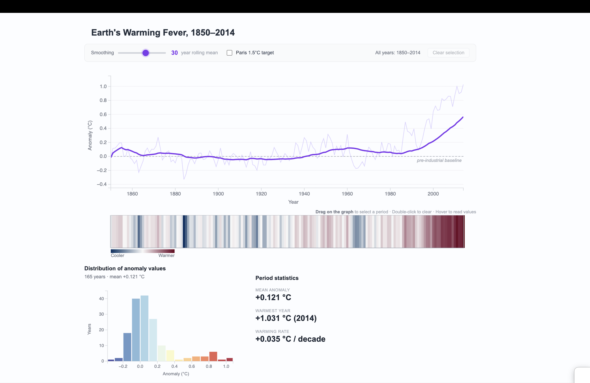
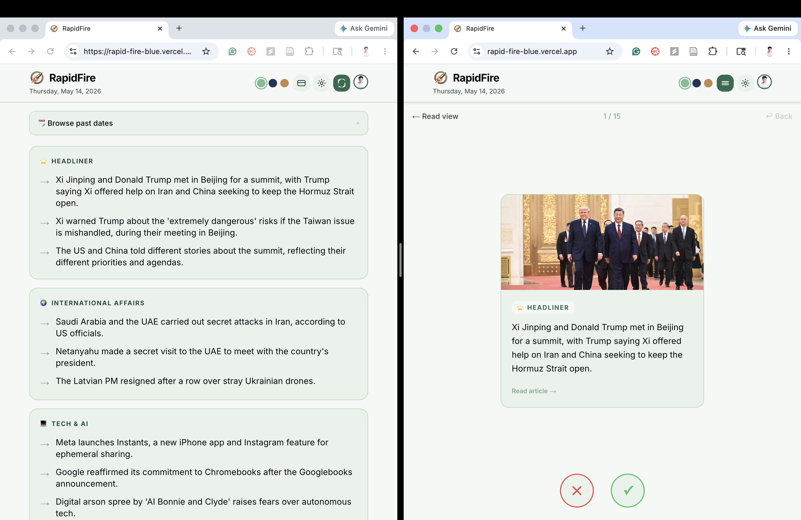
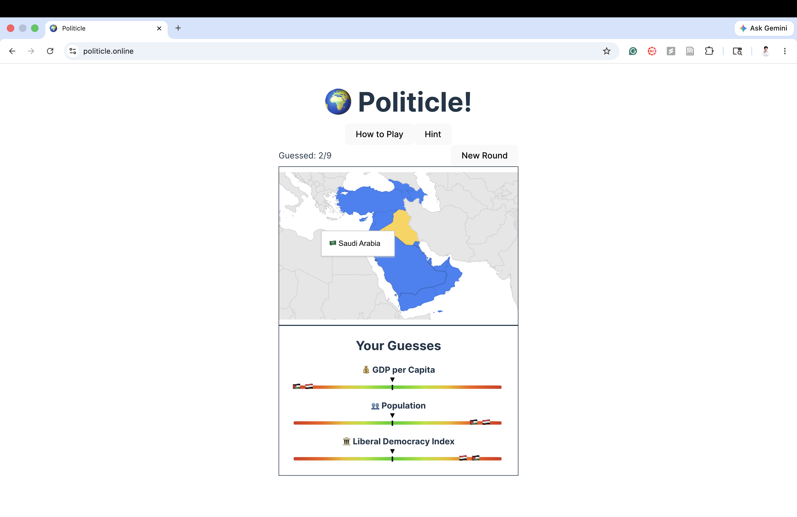

About Me
I became interested in IR after reading The Three-Body Problem as a kid. The dark forest theory stuck with me, and I've been thinking about deterrence and strategic behavior since.
Growing up in both China and the U.S., I realized the same story looked different depending on your perspective. So, I wanted to explore the truth for myself, which is what pushed me toward research on political economy, the geopolitics of emerging tech, and trade.
That interest extends to clean energy supply chains and critical minerals specifically. I'm interested in modeling the economic damage of export disruptions and the downstream effects on specific renewable applications.
Research on China
Using data to understand how China governs and competes.

A political language analysis tool I built to track how terminology shifts across Chinese government documents like Five-Year Plans, Economic Work Conferences, Third Plenums, etc. Users can monitor term frequency trends, see where topics appear in ranked policy priorities, and read AI-generated summaries that capture rhetorical changes over time.

An interactive dashboard I built to track recent and historic trade deals and investments in critical minerals. It pulls data from the IEA Critical Minerals Policy Tracker to map patterns in global supply chain activity and geopolitical competition over strategic resources.

Under Prof. Tai Ming Cheung at IGCC, I helped build a SQL database mapping over 2,500 Chinese research institutions in the IDAR system. I used OpenAI's API for translation and cleaning, and prepared 15+ variables for visualization in a project funded by the U.S. Department of State.
A policy memo proposing three reforms to help China hit its 5% GDP growth target: lower second-home down payment ratios, expand affordable housing re-lending, and align rates on existing mortgages with new ones. Tailored to different consumer segments against the backdrop of post-COVID market imbalances.

A top 5% paper in the Pioneer Academics program arguing that Chinese film history mirrors shifts in CCP governance strategy. Supervised by Prof. Chyng F. Sun, I looked at how party ideology and global market forces reshaped the balance of power between Chinese studios and Hollywood.
Other Research

As a research apprentice to PhD candidate Alison Boehmer, I expanded a database of 400+ political events in 250+ U.S. state prisons by coding Prison Legal News articles from 1990–2019. I wrote Python scripts to scrape, normalize, and visualize data, later using R to compare rhetorics via sentiment analysis and linear modeling.

A group project for DSC 106 (Data Visualization) where we built an interactive D3.js visualization of global temperature anomalies. We pulled data from CMIP6 climate models and designed the tool so users can explore how surface temperatures have shifted across different regions and emissions scenarios.
Personal Projects

A personal AI-curated news dashboard that delivers daily summaries across nine categories including tech, finance, politics, and AI. Headlines are pulled from NewsAPI and run through Llama 3.3 70B for categorization and summarization, with a calendar view for browsing past digests.

A Worldle-inspired game where you try to guess a hidden country using political and economic clues like the Liberal Democracy Index, GDP per capita, and population. You guess by clicking on an interactive world map and get directional feedback after each attempt to help narrow it down.